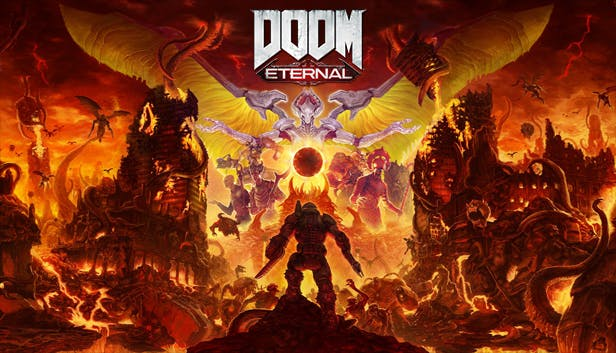

Os jogadores mais uma vez assumem o papel de Doom Slayer , um antigo guerreiro que luta contra as forças demoníacas do inferno a partir de uma perspectiva em primeira pessoa. O jogo continua a ênfase do seu predecessor no combate "push-forward", encorajando o jogador a atacar inimigos agressivamente para adquirir saúde e munição. O jogador tem acesso a várias armas de fogo, como Combat Shotgun, Super Shotgun , Heavy Cannon, Rocket Launcher, Plasma Rifle e Ballista . Armas brancas, como uma motosserra , espada energética "Crucible Blade" e uma lâmina de braço retrátil também podem ser usadas.
Data de lançamento inicial: 20 de março de 2020